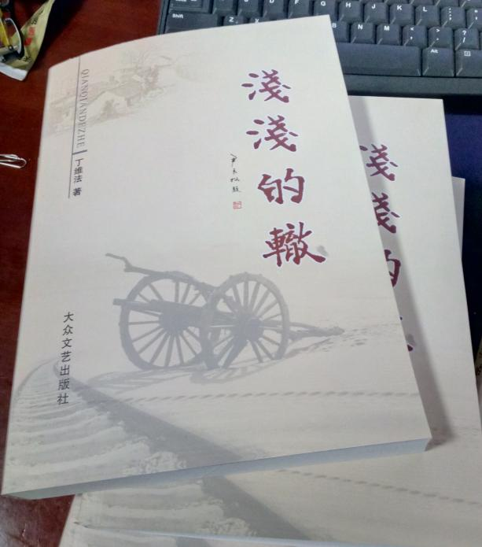
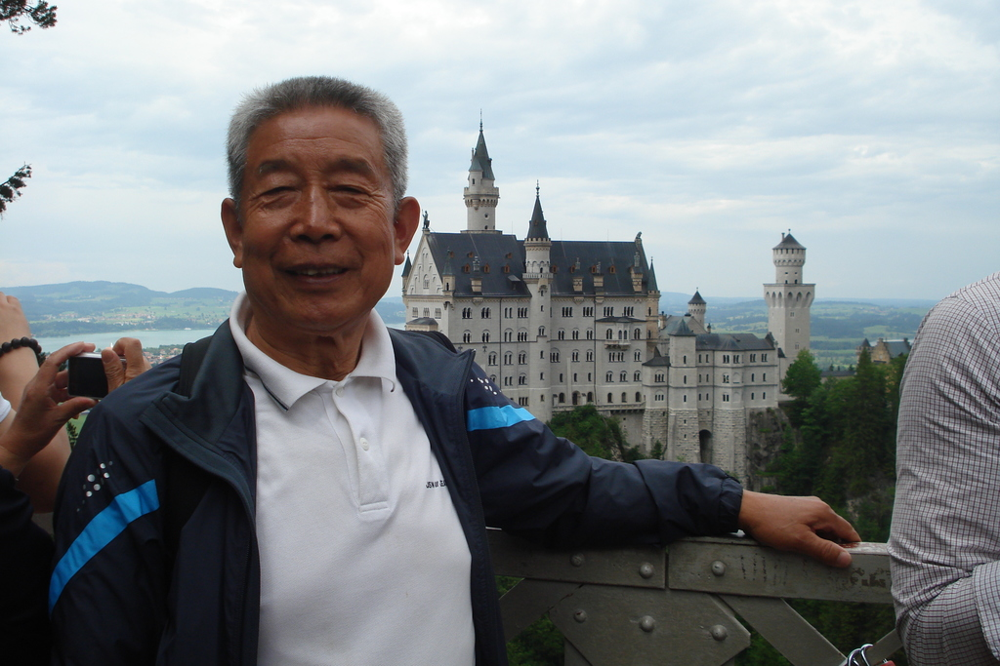
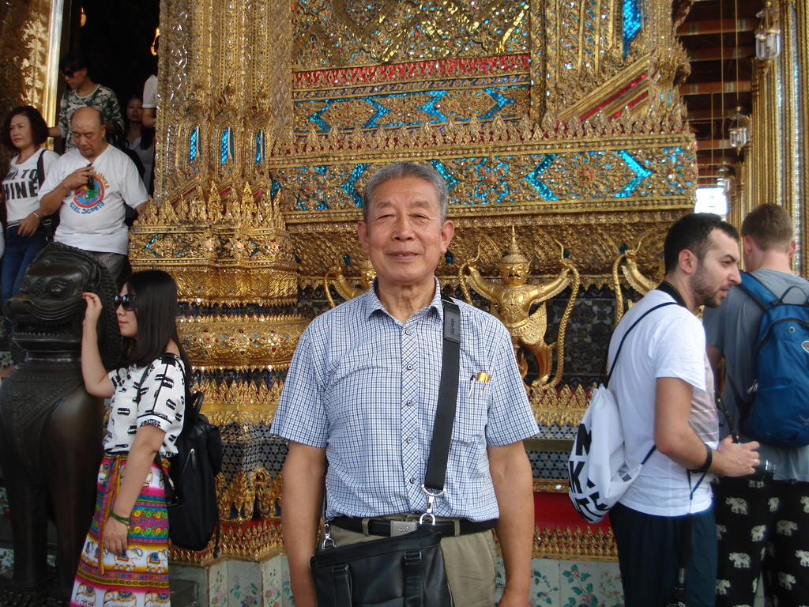
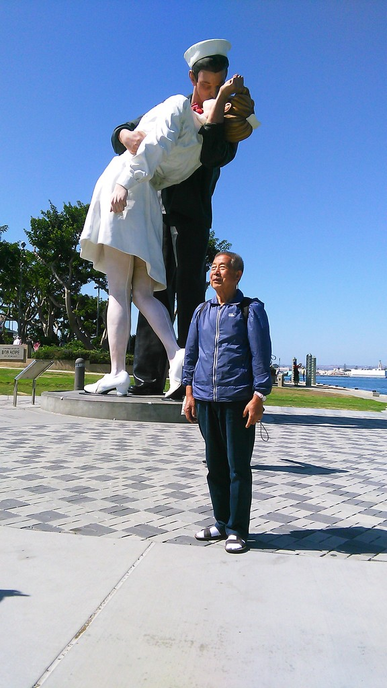
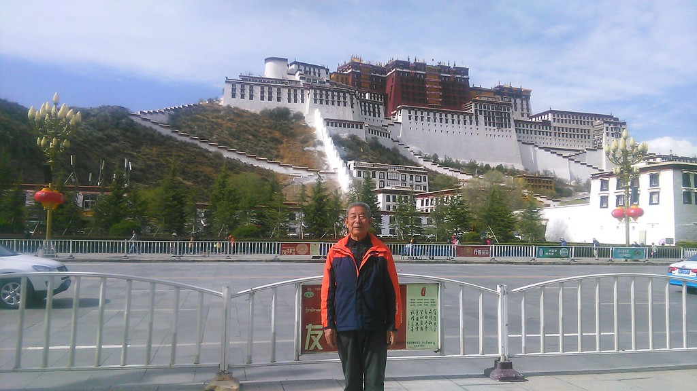
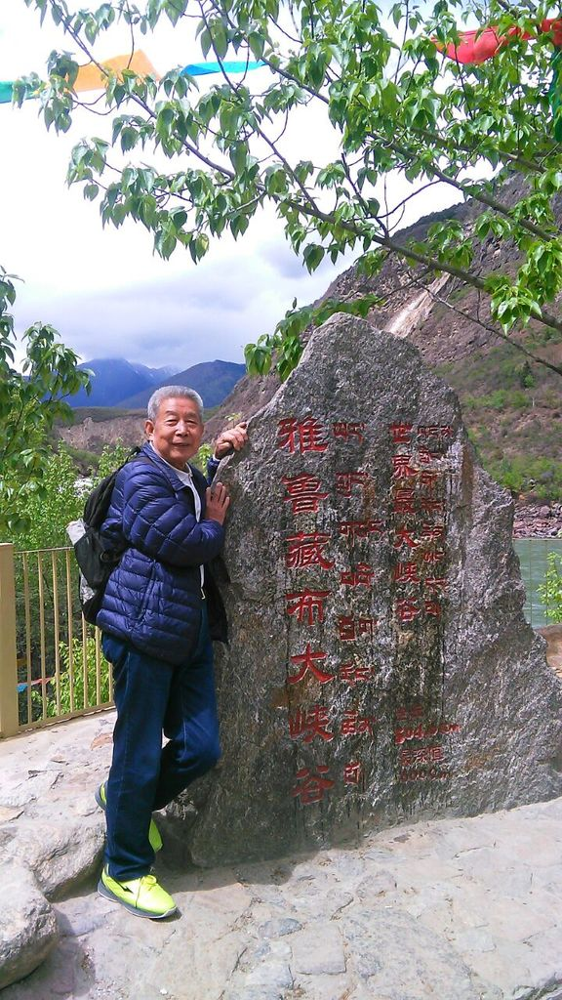
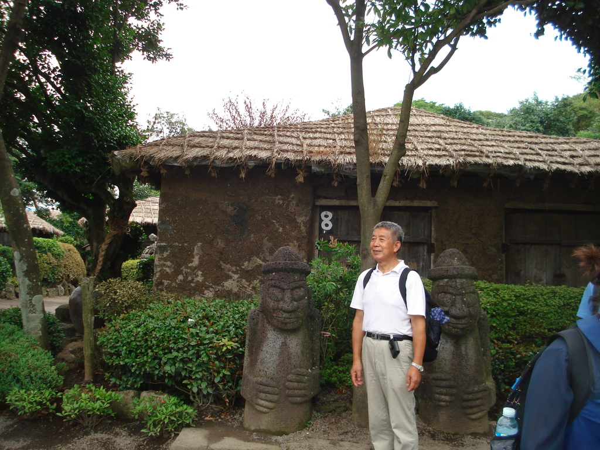

愚人不愚
我们这帮年逾古稀的老友中，最早用上智能手机的是丁维法先生。 微信朋友圈里，丁先生给自己选了一个人见人爱的昵称：愚人居。 微友们议论说，老先生以愚人自居，可见凡事谦恭，必然有着高尚的品格和道德涵养。 丁维法先生却不无自嘲，说，咱天生愚笨，惟愚而乐，惟愚而安，别无他求。 老伙计们心里清楚，丁维法先生心地豁达，胸襟宽广，一向笑对人生。过去了的岁月中，虽历经坎坷，却志在高远且坚韧不拔。他不是专业作家，却写得一手好文章， 每有作品问世，必定会在广大读者中引起强烈地反响。 如此通达而睿智的人，何愚之有？
在德国
一
上世纪五十年代末，农村中的文化人还不多，能在初中读过书，就算是知识分子了。15岁的少年，原本是个孩子，然而，当“大跃进”的号角响彻大江南北的时候，15岁的丁维法却被推选为乡村教师，当上了孩子王。 丁维法先生在西朱宋小学任教16年，他恪守为人师表的教师职责，给一拨又一拨的学生讲语文，讲数学，教孩子们做有文化、有理想的一代新人。至于他的教学水平如何，我们已经无法评价，因为教学质量的考核，不同的年代有不同的标准。但是，在随后的十几年间，人们却惊奇的发现，丁维法教过的学生中，陆陆续续出现了一批成就卓著的企业家。这是题外话。 1975年，掖县三十几处人民公社均增设了文化站这个机构，柞村公社党委经过层层筛选，从教师队伍中选出了丁维法，任命为文化站长。这一年，丁先生30岁刚出头，既有组织宣传能力，又能编写演唱节目，可谓风华正茂，才艺双全 。当时，笔者在文化馆上班，很快就认识了这位身材高挑，性格直率，作风踏实，言谈语吐带点书卷气的同齡人。 成立初期的公社文化站工作可真是不容易。文化站嘛，说起来应当抓的是群众文化，可公社无论何时都有中心工作，哪个部门都不得脱离中心，群众文化在中心之外，你文化站长当然得像所有公社干部一样分片蹲点去抓中心。尽管如此，丁站长的文化工作却依然搞得有声有色，不几年的时间，柞村公社的图书室建起来了，各村的文化大院相继挂牌。每年年底，县里都要组织一次文艺会演，柞村公社代表队自编自排的文艺节目，总能给县城文艺舞台带来浓浓的乡村气息和时代感召力，捧回属于他们的演出奖状。遍地都是石头的柞村百姓们，文化娱乐生活可以说红红火火。

在德国2
忙忙碌碌的日子过得风快，一晃，近十年的光阴过去了，公社的建置已经变更为乡或镇。就在柞村镇的群众文化生活日渐丰富多彩，文化站长们也即将转为国家正式干部的时候，丁维法先生却从镇政府大院里悄然消失了……再见到他，是在县城府西胡同里的建委门外。丁先生思维敏捷，文字严谨，知识面又广，县建委缺少这方面的人才，聘他专事编辑《建筑业情况交流》这个刊物。 因为不再是一个系统的职工，也因为都在忙着自己所从事的工作，平日里很少联系，偶尔碰了面，匆匆打个招呼就过去了。 这样的时光大约又过了十几年，我们都已经接近了退休的年齡。记得是2000年的春季，有一天，丁维法先生到文化馆来了，手里拿了一份文稿，题目叫做《十五门前无奈灯》，说是刚写的，想请大家提提意见。当时，笔者借以栖身的三楼展厅里，有几位本市颇有名望的作者正在一起闲聊，便接过稿子开始传阅。好在文稿不长，一千五、六百字的样子，不过半个时辰，所有的人都看完了。这一看不要紧，用一句毫不夸张的话说，叫举座皆惊！怎么说呢？丁先生离开文化队伍许久了，竟然一出手就是精品。这故事写得太绝了，人物、情节、结构、语言无一不精，尤其贵在题材新颖，笔如剑锋，直指官场腐败。大家一致的意见是，此篇无须改动，直接投给全国最大的故事期刊《故事会》，肯定选用。丁维法先生听从了大家的意见，分别寄给了《山海经》和《故事会》两家期刊，结果，《山海经》很快就来了刊用消息，接着，《故事会》的用稿通知也到了。为避免纠纷，丁先生按先来先定的常理，迅速给稿酬丰厚的《故事会》发去了撤稿函。 一篇稿件几家期刊争着用，好与不好不是明摆着的事吗？

在泰国
二
有人说，读丁维法先生的文章，如同读画家的工笔画。 是的，丁维法先生创作的文学作品，包括小说和故事，篇幅都不长。但是，大凡读过这些作品的朋友都有一个共同的感受，那就是画面感很强，让人久久难以忘怀。从文学这个角度去看，这是特色，是一种独立的写作风格，源自作家善于运用语言为线条去勾勒故事，勾勒情节，勾勒人物，勾勒世间百态。这些线条，或长或短，或粗或细，刀劈斧凿般的力透纸背，却又能纤毫毕现，然后，则是依据这些线条勾勒出的骨架进行层层渲染。于是乎，作品所要揭示的主题便一目了然。 都说是文如其人，这话不假。丁维法先生的文字简练质朴，叙述的手法多为白描，清新、淡雅、流畅，行云流水似的，却极耐品味，细细地咂摸，如同陈年老窖一般，醇厚而浓烈。 是什么让丁先生的作品充满了这样的艺术魅力？笔者认为，一是丁先生行笔不事雕饰，不雕饰才是最好的雕饰。二是丁先生致力于从社会的最底层发掘创作素材，紧盯社会伦理和反腐倡廉这些老百姓最为关注的焦点，如此，作品一经发表便获得读者盛赞，就是自然而然的事情了。 笔者喜欢读丁维法先生写的小说，特别是《哑娘》，借句时尚话说，每一次拜读《哑娘》都使我泪奔。还有《胸章》，是丁维法先生创作的诸多优秀故事之一。笔者的电脑中，建有一个名曰《师友文库》的文件夹，收藏的全是师友们在文学艺术领域中创作的各类精品，有文字也有图片，丁先生的作品在《师友文库》中独占了一个子文件夹，《胸章》就保存在这个子文件夹中。闲下来的时候，我会打开电脑，到《师友文库》中细细地逐一翻阅，静静地用心去感受作品中的艺术风采。而每逢寒舍有客人到访，只要涉及到文学创作这个话题，我多半要把《胸章》调出来，与文友们一起分享。
在美国克罗拉多大峡谷
丁维法先生长期工作在基层，有着丰富的社会阅历。他的心灵之窗始终敞开着，与百姓们的心贴得很近，也因此而洞察到诸如官场腐败等种种丑恶的社会现象并深恶痛绝！《胸章》所揭露的，正是一个当下领导干部索贿行贿的故事。 《胸章》的情节极简单，鞭挞的却是带有普遍性的社会赘瘤。作家用最为擅长的白描手法，犹如利刃在握，讲述了何局长从北京开会归来，佩带着毛主席“为人民服务”的白金胸章到各县市督导工作的过程，可谓层层剥露，刀刀见血，使得这位领导干部，还有他的秘书和部属，这些阴阳两面的败类，与同他们那肮脏、自私、龌龊的灵魂世界，一览无余地暴露在光天化日之下，读过的人无不拍手称快！ 《胸章》无疑是当代的文学经典之一。感谢《新聊斋》的编辑们慧眼识珠，收稿即定刊用。继而，迅速被《杂文选刊》等四、五家全国性期刊转载。迄今为止，作家发表的文章能同时被这么多家选刊登载，在莱州还少有超越者。不仅如此，2002年11月，全国首届故事期刊理事会年会在南宁举行，《胸章》荣获优秀作品奖。翌年，《胸章》入选全国《高考模拟题欣赏作品》一书，尔后，又陆续被十几个省市的出版部门作为必读教材，收入了语文高考辅导课本。 多么希望莱州的作家队伍中能多出几个这样的愚人，如此，我们会更加为之骄傲！

在美国
三
新世纪刚开始的几年间，是丁维法先生文学创作的丰收季。 天有不测风云。一场突如其来的变故，改变了他的人生轨迹，也改变了他的生活和写作轨迹。2011年，从大病中恢复过来的丁维法先生，成了开荒者，也成了我们这帮老友中名符其实的旅行家。当然，再读丁先生的新作，则一律是文辞大美的游记了。 起初，老友们对不缺粮不缺菜的老丁弟兄抱着尚待康复中的身体去开荒种地很是费解。可是，每当老友聚会时，丁先生津津有味地讲述他怎样点种玉米和压地瓜，怎样为葡萄果穗套袋，收获的是无污染无公害的粮果；还讲述他怎样掐来鲜嫩的瓜叶蒸成“拨儿”，以丰富自己的食谱；怎样把鲜嫩的小苔菜一棵棵拔起来，摘除黄叶，抖净泥土，再一袋袋装了，分送给亲朋好友，或楼上楼下的悄悄放在邻居门口的时候，老友们渐渐释然了，这丁老先生，一场大病让他对人生有了新的认识，开垦荒地，播种的是生命，播种的是希望；用汗水灌溉土地，收获的是喜悦，对社会而言，增加了财富。如此一来，人生增添了无穷的乐趣，生活也就有了更高的质量和意义。 当我们时而品尝着丁维法先生从开荒地里收获的菜蔬，自然地会记起他前些年在大病煎熬中的一些情形。丁先生的三次大手术都是在协和医院里做的，而每一次，家里的老友们都遥望着北京，在心里一遍又一遍地祷告，祈求苍天还我老友，让老哥们儿丁维法康复如初。 阎王爷没有收留丁维法，当然不是因为老友们的祈祷，而是老丁坚强的心理素质和与病魔顽强抗争的胜利。记得有一次手术是春节前，除夕那天才被接回家中的丁先生，刀口上的缝合线都还没有拆除。然而，春节后不久，料峭寒风中，丁维法先生已经在城中村的荒地里开始劳作了。

在西藏布达拉宫前
康复中的丁维法先生能开荒种地，还能背水。同老伴一起到烟台的女儿家小住，闲不住的丁老爷子就跟着邻居翻山越岭去背山泉水，往返一次20华里，起码背回20斤泉水。使得老伴、女儿、女婿还有小外甥都心痛不已。 丁先生不仅种地、背水，他还要周游列国。2001年到越南旅游不算，从2012年开始，他先后游历了亚洲、欧洲和北美洲三大洲的十几个国家和地区。2017年，又跟团西去，走进了雪域高原西藏。 每次旅游归来，丁维法先生都要把老友们召集一起，品尝他从异国他乡带回来的美食，同时向我们详细介绍旅途中的所见所闻，介绍各个国家、各个地区的秀美景色和风土人情，老友们就像跟随丁先生一起旅游，感觉身临其境似的。 大伙都用上智能手机后，就有了新的交流方式。丁先生再出发旅游，每到一地，总要拍上几帧照片，第一时间传给我们这帮老友，在法国的巴黎圣母院和凡赛尔宫前，在瑞士的阿尔卑斯山下，在意大利的罗马古城……特别是从美国国会大厦前和科罗拉多大峡谷传回来的照片，丁先生红光满面，意气风发地向着家乡的亲友们招手，老友们分享着美丽景色的同时也深感欣慰，人生路上，丁维法先生彻底战胜了病魔，他是坚韧不拔的强者！

在西藏雅鲁藏布大峡谷
四
丁维法先生是个十分重友情的人。近20年来，我们一帮老友经常聚会，一杯淡茶，一壶老酒，除了谈文学，大多是山南海北的侃，谁爱唱就唱，谁想喊就喊，无拘无束，情同手足……从半大老头儿，直到今日的耄耋老者。步入垂暮之年的老友们，年事愈高，感情弥笃。 我们时常一起外出郊游，最难忘记的是2007年七夕日，丁维法先生找了一辆面包车，载上我们一帮老友，先去盖平山下礼佛，再到尚家山去品尝用山泉水炖出的羊汤，尔后一路向南，直抵平度境内的天柱山下。是日，空中没有一丝风，秋老虎发威，热得人胸闷气短，身上直冒油汗。丁维法先生购了门票，招呼大家一起登山。天柱山峭如一把直指青天的利剑，大伙奋力地向山上攀登，及至爬上山顶，来到北魏封疆大吏郑道昭为颂扬自己祖上功德而雕凿的《上碑》下，人人大汗淋漓，只好脱去上衣，打起了赤膊。读过这通长篇巨制的魏书经典碑刻，站在山巅之上，踮着脚，高高地伸了手，去触摸蓝天下的白云，顿觉神清气爽，分外开心……

在韩国
事至今日，整整10个年头过去了，好多事情都忘却了，惟独对天柱山之行记忆犹新。每逢七夕日，老友们都会念叨那次活动，有时，还会把当年在天柱山上光着膀子拍的照片翻出来，几番瞅量，几番感叹！ 今年秋天聚会的时候，丁维法先生告诉老友们，他要把已经发表和不曾发表过的文章汇集起来，印一本书，也算是人生路上一个阶段性的总结。於是，笔者就写了上面的一些话。 如果把这些话归纳成一句，那就是： 愚人不愚。